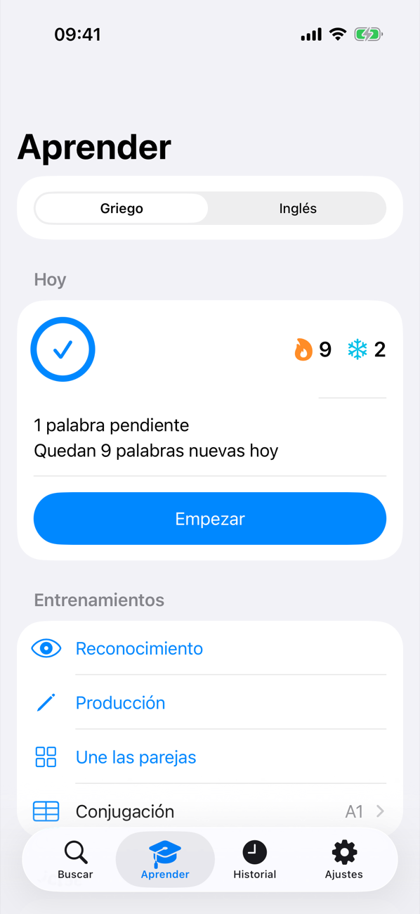
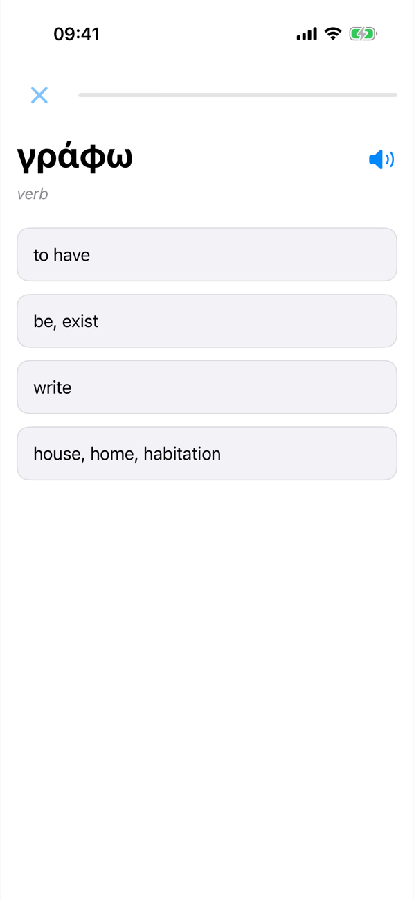
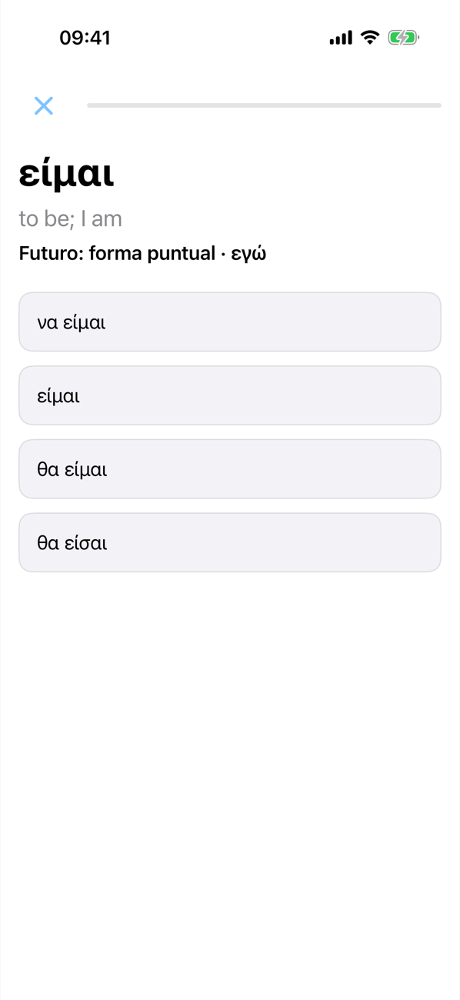
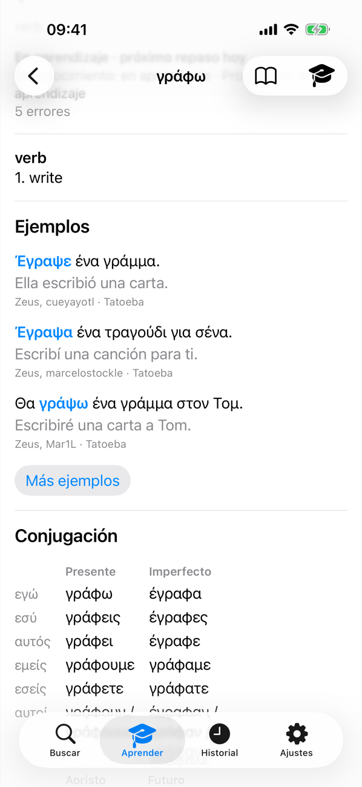
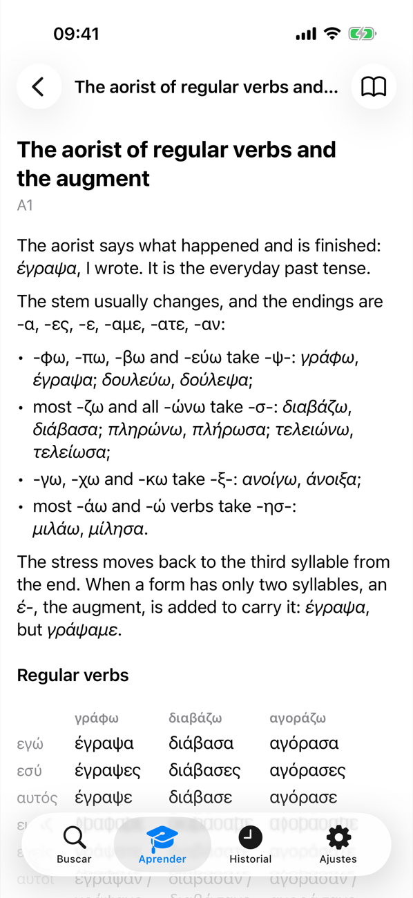

LibreDict
Un diccionario sin conexión que te ayuda a aprender palabras
LibreDict es un diccionario rápido y ligero de inglés, griego, español, ruso y árabe. Busca una palabra y apréndela.
Diccionario
El inglés viene incluido; los demás idiomas se descargan una vez y después funcionan sin conexión. La búsqueda encuentra cualquier forma flexionada (έγραψα encuentra γράφω) y las palabras griegas muestran tablas de declinación y conjugación.
Aprender
Listas de palabras por nivel (griego A1–B1, inglés A1–C2) o las tuyas desde CSV, Anki o Quizlet. Práctica diaria con repetición espaciada y frases de ejemplo reales.
Gramática
Un entrenador de conjugación y temas breves de gramática, con el griego como primer idioma.
Privacidad
Sin anuncios, sin cuentas, sin rastreo. Todo se queda en tu dispositivo.
Capturas de pantalla




